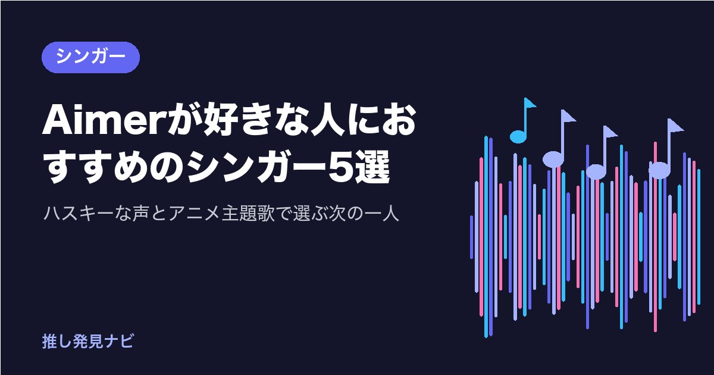

Aimerが好きな人におすすめのシンガー5選｜ハスキーな声とアニメ主題歌で選ぶ次の一人

『鬼滅の刃』遊郭編の「残響散歌」や、結婚式でもよく流れる「カタオモイ」で、Aimerの声に引き込まれた人は多いのではないでしょうか。
低くかすれたハスキーな質感と、少年にも大人の女性にも聞こえる中性的な響きは、一度聴くと忘れにくいものです。
この記事では、Aimerが好きな人に聴いてほしい5人を、共通点と違いに注目して紹介します。
Aimerの魅力をおさらい
Aimer（エメ）は、2011年9月にアニメ『NO.6』のエンディング「六等星の夜」でメジャーデビューしました。2017年に初の日本武道館公演、2022年1月の「残響散歌」（『鬼滅の刃』遊郭編オープニング、梶浦由記提供）が大ヒットし、その年の末にNHK紅白歌合戦に初出場しました。
2026年はデビュー15周年企画「NORANEKO」を始動し、11月3日に横浜BUNTAIでピアノ伴奏のみの単独公演を予定。2027年初頭には、全曲未発表のセルフプロデュースによる8thアルバムが控えています。
歌の題材は「夜」「星」「光と影」「別れの後の静けさ」で、言葉づかいは文語寄りの端正な日本語。作曲は飛内将大、梶浦由記、澤野弘之ら外部の作家が中心で、作家ごとに曲調が変わっても声で統一されるのが大きな特長です。
「低く深い声」「夜と余韻の言葉」「アニメ主題歌」「作家が変わっても声で聴かせる」。このどれに惹かれたかで、おすすめが変わります。
低く深い声と、英語まじりの繊細な言葉が好きな人へ
milet
東京都出身のシンガーソングライターで、2019年3月にEP『inside you EP』でメジャーデビューしました。『葬送のフリーレン』エンディングの「Anytime Anywhere」、ドラマ『アンチヒーロー』主題歌の「hanataba」で広く知られ、2026年8月に4thアルバム『Made of Glass』を発売、9月から全国ホールツアー中です。
Aimerとの共通点は、日本の女性ポップスでは珍しいアルトの低く太い声と、ウィスパーと張った声の落差です。題材の静かな温度も近いです。違いは、英語と日本語が自然に混ざり、英語のフレーズをサビの息継ぎのように使うこと、そして作詞作曲に本人が全曲参加する「自作＋共作」型であること。Aimerの「提供型なのに声で統一される」魅力に対し、miletは「自分の言葉を自分の声で」届けるタイプです。「inside you」「Anytime Anywhere」「hanataba」から聴いてみてください。
澤野弘之のシネマティックな音と、芯のある低音が好きな人へ
SennaRin
福岡県出身の女性シンガーです。YouTubeのカバー動画が累計5,500万回以上再生され、作曲家の澤野弘之に見いだされて、2022年4月に澤野プロデュースの1st EP『Dignified』でメジャーデビューしました。『BLEACH 千年血戦篇』エンディングの「最果て」でアニメファンに浸透し、2026年2月には澤野との共同アルバム『LOSTandFOUND』を発表しています。
Aimerとの共通点は、澤野弘之というつながりです。Aimerも澤野の楽曲を歌っており、SennaRinはその系譜に連なるボーカルです。低音に芯があり、サビで一気に伸びる力強い声は、Aimerの質感で聴かせる歌に惹かれた人にまっすぐ届きます。違いは、題材が「戦いの後に残るもの」など作品のキャラクターの心情に寄ることと、静かなピアノの導入からフルバンドが爆発する澤野曲ならではの構造です。所属もAimerと同じSACRA MUSICです。「Dignified」「最果て」「ADRENA」から聴いてみてください。
『鬼滅の刃』の主題歌から、走るロックに行きたい人へ
LiSA
岐阜県出身の女性ロックシンガーです。2011年にソロデビューし、2019年の「紅蓮華」（『鬼滅の刃』オープニング）と2020年の「炎」（『劇場版 鬼滅の刃 無限列車編』主題歌）で国民的な知名度を得て、「炎」は日本レコード大賞を受賞しました。2026年はソロデビュー15周年で、4月に7thアルバム『LACE UP』を発表し、国内アリーナツアーとアジアツアーを行っています。
Aimerとの共通点は、『鬼滅の刃』の主題歌を担ったこと、「炎」と「残響散歌」がどちらも梶浦由記の楽曲であること、そしてSACRA MUSICの所属であることです。同じ作家の曲を違う声で歌う二人を聴き比べると、個性がくっきり見えてきます。違いは、太く張りのあるロックボイスで「立ち上がる・戦う」を前に出す歌い方。Aimerが質感で聴かせるなら、LiSAは走って聴かせるシンガーです。「紅蓮華」「炎」「明け星」から聴いてみてください。
端正な夜の言葉から、やさしい日常の言葉へ行きたい人へ
幾田りら
YOASOBIのボーカルikuraとしても知られる、2000年生まれ、東京都出身のシンガーソングライターです。ソロでは2023年に1stアルバム『Sketch』、2026年1月に2ndアルバム『Laugh』を発表し、5月に3年ぶりのソロツアーを行いました。
Aimerとの共通点は、別の作り手の曲（YOASOBIではAyase）を歌うときと、自分の作品のときで表情が変わることです。違いは、声も言葉も対照的であること。幾田りらの声は高く透明でこもりがなく、ソロの題材は日常の小さな喜びや友人への感謝で、ひらがなの多い平易な口語で書かれます。Aimerの端正な夜の言葉から、同じていねいさを持ったまま、明るい昼の側へ歩いてみたい人におすすめです。「Sparkle」「レンズ」「stay with me」から聴いてみてください。
中性的な声と、アニメ主題歌のネット発シンガーが好きな人へ
yama
2018年にYouTubeの歌ってみた（カバー投稿）から活動を始め、2020年4月のオリジナル曲「春を告げる」で注目を集めたソロシンガーです。目元を覆う白い仮面と青い髪で顔を出さず、性別や年齢も非公開のまま、『SPY×FAMILY』の「色彩」、『機動戦士ガンダム 水星の魔女』の「slash」などのアニメ主題歌を担当し、4枚のアルバムと国内外のツアーを重ねています。
Aimerとの共通点は、少年にも大人の女性にも聞こえる中性的な声と、アニメ主題歌との相性の良さです。違いは、YouTube発で顔を出さない活動のスタイルと、ロックやエレクトロ寄りの現代的なサウンド。Aimerのバラードの余韻が好きな人には、yamaの疾走する曲の中にある切なさが、新しい入口になります。「春を告げる」「色彩」「slash」から聴いてみてください。
まとめ
Aimerの魅力を4つに分けると、次に聴く一人が選びやすくなります。
| アーティスト | Aimerとの共通点 | 聴きどころ |
|---|---|---|
| milet | 低く太いアルトの声、静かな題材 | 英語まじりの言葉と自作の歌 |
| SennaRin | 澤野弘之のつながり、芯のある低音 | ピアノから爆発する劇的な構造 |
| LiSA | 『鬼滅の刃』主題歌、梶浦由記の曲 | 走るロックボイス |
| 幾田りら | 作り手の曲と自作の二つの顔 | 高く透明な声と日常の言葉 |
| yama | 中性的な声、アニメ主題歌 | ネット発の疾走する切なさ |
アニメ主題歌の仲間は、LiSAが好きな人におすすめのアニソンアーティスト5選でも紹介しています。
まずは、この5人の中で「声」がいちばん気になった一人の代表曲を、1曲だけ聴いてみませんか。あなたがAimerの歌でいちばん好きな瞬間は、ささやきの部分と張り上げる部分のどちらでしょうか。
楽曲は各アーティストの公式チャンネルや配信サービスでお楽しみください。
気になった1曲を、今日1回だけ聴いてみませんか。各アーティストの公式チャンネルや配信サービスで聴けます。
あなたの好きなアーティストは誰ですか？
最後まで読んでくださり、ありがとうございました。